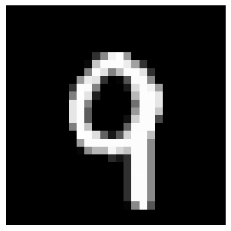
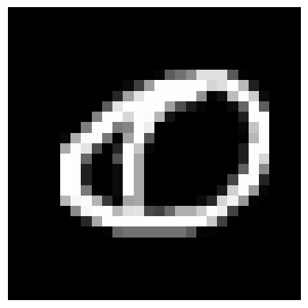
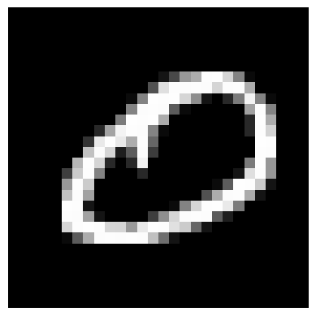
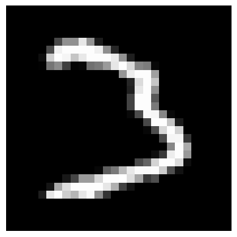
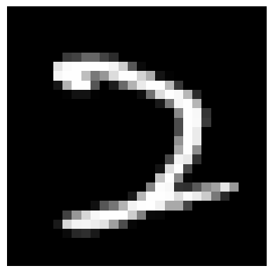

Nearest neighbor for handwritten digit recognition
In this notebook we will build a classifier that takes an image of a handwritten digit and outputs a label 0-9. We will look at a particularly simple strategy for this problem known as the nearest neighbor classifier.
To run this notebook you should have the following Python packages installed: * numpy * matplotlib * sklearn
1. The MNIST dataset
MNIST is a classic dataset in machine learning, consisting of 28x28 gray-scale images handwritten digits. The original training set contains 60,000 examples and the test set contains 10,000 examples. In this notebook we will be working with a subset of this data: a training set of 7,500 examples and a test set of 1,000 examples.
%matplotlib inline
import numpy as np
import matplotlib.pyplot as plt
import time
## Load the training set
train_data = np.load('MNIST/train_data.npy')
train_labels = np.load('MNIST/train_labels.npy')
## Load the testing set
test_data = np.load('MNIST/test_data.npy')
test_labels = np.load('MNIST/test_labels.npy')## Print out their dimensions
print("Training dataset dimensions: ", np.shape(train_data))
print("Number of training labels: ", len(train_labels))
print("Testing dataset dimensions: ", np.shape(test_data))
print("Number of testing labels: ", len(test_labels))Training dataset dimensions: (7500, 784)
Number of training labels: 7500
Testing dataset dimensions: (1000, 784)
Number of testing labels: 1000## Compute the number of examples of each digit
train_digits, train_counts = np.unique(train_labels, return_counts=True)
print("Training set distribution:")
print(dict(zip(train_digits, train_counts)), end='\n\n')
test_digits, test_counts = np.unique(test_labels, return_counts=True)
print("Test set distribution:")
print(dict(zip(test_digits, test_counts)))Training set distribution:
{0: 750, 1: 750, 2: 750, 3: 750, 4: 750, 5: 750, 6: 750, 7: 750, 8: 750, 9: 750}
Test set distribution:
{0: 100, 1: 100, 2: 100, 3: 100, 4: 100, 5: 100, 6: 100, 7: 100, 8: 100, 9: 100}2. Visualizing the data
Each data point is stored as 784-dimensional vector. To visualize a data point, we first reshape it to a 28x28 image.
## Define a function that displays a digit given its vector representation
def show_digit(x):
plt.axis('off')
plt.imshow(x.reshape((28,28)), cmap=plt.cm.gray)
plt.show()
return
## Define a function that takes an index into a particular data set ("train" or "test") and displays that image.
def vis_image(index, dataset="train"):
if(dataset=="train"):
show_digit(train_data[index,])
label = train_labels[index]
else:
show_digit(test_data[index,])
label = test_labels[index]
print("Label " + str(label))
return
## View the first data point in the training set
vis_image(0, "train")
## Now view the first data point in the test set
vis_image(0, "test")
Label 9
Label 03. Squared Euclidean distance
To compute nearest neighbors in our data set, we need to first be able to compute distances between data points. A natural distance function is Euclidean distance: for two vectors \(x, y \in \mathbb{R}^d\), their Euclidean distance is defined as \[\|x - y\| = \sqrt{\sum_{i=1}^d (x_i - y_i)^2}.\] Often we omit the square root, and simply compute squared Euclidean distance: \[\|x - y\|^2 = \sum_{i=1}^d (x_i - y_i)^2.\] For the purposes of nearest neighbor computations, the two are equivalent: for three vectors \(x, y, z \in \mathbb{R}^d\), we have \(\|x - y\| \leq \|x - z\|\) if and only if \(\|x - y\|^2 \leq \|x - z\|^2\).
Now we just need to be able to compute squared Euclidean distance. The following function does so.
## Computes squared Euclidean distance between two vectors.
def squared_dist(x,y):
return np.sum(np.square(x-y))
## Compute distance between a seven and a one in our training set.
print("Distance from 7 to 1: ", squared_dist(train_data[4,],train_data[5,]))
## Compute distance between a seven and a two in our training set.
print("Distance from 7 to 2: ", squared_dist(train_data[4,],train_data[1,]))
## Compute distance between two seven's in our training set.
print("Distance from 7 to 7: ", squared_dist(train_data[4,],train_data[7,]))Distance from 7 to 1: 5357193.0
Distance from 7 to 2: 12451684.0
Distance from 7 to 7: 5223403.04. Computing nearest neighbors
Now that we have a distance function defined, we can now turn to nearest neighbor classification.
## Takes a vector x and returns the index of its nearest neighbor in train_data
def find_NN(x):
# Compute distances from x to every row in train_data
distances = [squared_dist(x,train_data[i,]) for i in range(len(train_labels))]
# Get the index of the smallest distance
return np.argmin(distances)
## Takes a vector x and returns the class of its nearest neighbor in train_data
def NN_classifier(x):
# Get the index of the the nearest neighbor
index = find_NN(x)
# Return its class
return train_labels[index]## A success case:
print("A success case:")
print("NN classification: ", NN_classifier(test_data[0,]))
print("True label: ", test_labels[0])
print("The test image:")
vis_image(0, "test")
print("The corresponding nearest neighbor image:")
vis_image(find_NN(test_data[0,]), "train")A success case:
NN classification: 0
True label: 0
The test image:Label 0
The corresponding nearest neighbor image:
Label 0## A failure case:
print("A failure case:")
print("NN classification: ", NN_classifier(test_data[39,]))
print("True label: ", test_labels[39])
print("The test image:")
vis_image(39, "test")
print("The corresponding nearest neighbor image:")
vis_image(find_NN(test_data[39,]), "train")A failure case:
NN classification: 2
True label: 3
The test image:
Label 3
The corresponding nearest neighbor image:
Label 25. For you to try
The above two examples show the results of the NN classifier on test points number 0 and 39.
Now try test point number 100. * What is the index of its nearest neighbor in the training set? Record the answer: you will enter it as part of this week’s assignment. * Display both the test point and its nearest neighbor. * What label is predicted? Is this the correct label?
6. Processing the full test set
Now let’s apply our nearest neighbor classifier over the full data set.
Note that to classify each test point, our code takes a full pass over each of the 7500 training examples. Thus we should not expect testing to be very fast. The following code takes about 100-150 seconds on 2.6 GHz Intel Core i5.
## Predict on each test data point (and time it!)
t_before = time.time()
test_predictions = [NN_classifier(test_data[i,]) for i in range(len(test_labels))]
t_after = time.time()
## Compute the error
err_positions = np.not_equal(test_predictions, test_labels)
error = float(np.sum(err_positions))/len(test_labels)
print("Error of nearest neighbor classifier: ", error)
print("Classification time (seconds): ", t_after - t_before)Error of nearest neighbor classifier: 0.046
Classification time (seconds): 88.796833038330087. Faster nearest neighbor methods
Performing nearest neighbor classification in the way we have presented requires a full pass through the training set in order to classify a single point. If there are \(N\) training points in \(\mathbb{R}^d\), this takes \(O(N d)\) time.
Fortunately, there are faster methods to perform nearest neighbor look up if we are willing to spend some time preprocessing the training set. scikit-learn has fast implementations of two useful nearest neighbor data structures: the ball tree and the k-d tree.
from sklearn.neighbors import BallTree
## Build nearest neighbor structure on training data
t_before = time.time()
ball_tree = BallTree(train_data)
t_after = time.time()
## Compute training time
t_training = t_after - t_before
print("Time to build data structure (seconds): ", t_training)
## Get nearest neighbor predictions on testing data
t_before = time.time()
test_neighbors = np.squeeze(ball_tree.query(test_data, k=1, return_distance=False))
ball_tree_predictions = train_labels[test_neighbors]
t_after = time.time()
## Compute testing time
t_testing = t_after - t_before
print("Time to classify test set (seconds): ", t_testing)
## Verify that the predictions are the same
print("Ball tree produces same predictions as above? ", np.array_equal(test_predictions, ball_tree_predictions))Time to build data structure (seconds): 0.643275260925293
Time to classify test set (seconds): 8.884220838546753
Ball tree produces same predictions as above? Truefrom sklearn.neighbors import KDTree
## Build nearest neighbor structure on training data
t_before = time.time()
kd_tree = KDTree(train_data)
t_after = time.time()
## Compute training time
t_training = t_after - t_before
print("Time to build data structure (seconds): ", t_training)
## Get nearest neighbor predictions on testing data
t_before = time.time()
test_neighbors = np.squeeze(kd_tree.query(test_data, k=1, return_distance=False))
kd_tree_predictions = train_labels[test_neighbors]
t_after = time.time()
## Compute testing time
t_testing = t_after - t_before
print("Time to classify test set (seconds): ", t_testing)
## Verify that the predictions are the same
print("KD tree produces same predictions as above? ", np.array_equal(test_predictions, kd_tree_predictions))Time to build data structure (seconds): 1.15635347366333
Time to classify test set (seconds): 12.445853233337402
KD tree produces same predictions as above? True